El sueño y las transiciones de la vigilia al sueño y del sueño a la vigilia son partes cruciales de un EEG.
Cuando un EEG no contiene sueño, se considera un estudio incompleto. Tanto es así que algunos centros repiten
el EEG si no se capturó un periodo de sueño en el EEG inicial.
Las anomalías epileptiformes tienden a aparecer más frecuentemente durante el sueño o en las transiciones
entre la vigilia y el sueño. Algunas anomalías que no se ven claramente durante la vigilia porque están
escondidas entre el artefacto muscular de la vigilia a veces se pueden ver más claramente durante el sueño.
Los espasmos infantiles tienden a ocurrir más frecuentemente cuando el lactante despierta del sueño.
En resumen, un EEG sin sueño es casi como un coche (coche en España; carro o auto si lees esto en Latino América)
sin ruedas. Entonces, es importante familiarizarse con el sueño.
QUEDÁNDOSE DORMIDO/A
La mayoría de las personas no se duermen abruptamente. Hay una transición progresiva de la vigilia al sueño
en la que la somnolencia evoluciona en un sueño cada vez más profundo.
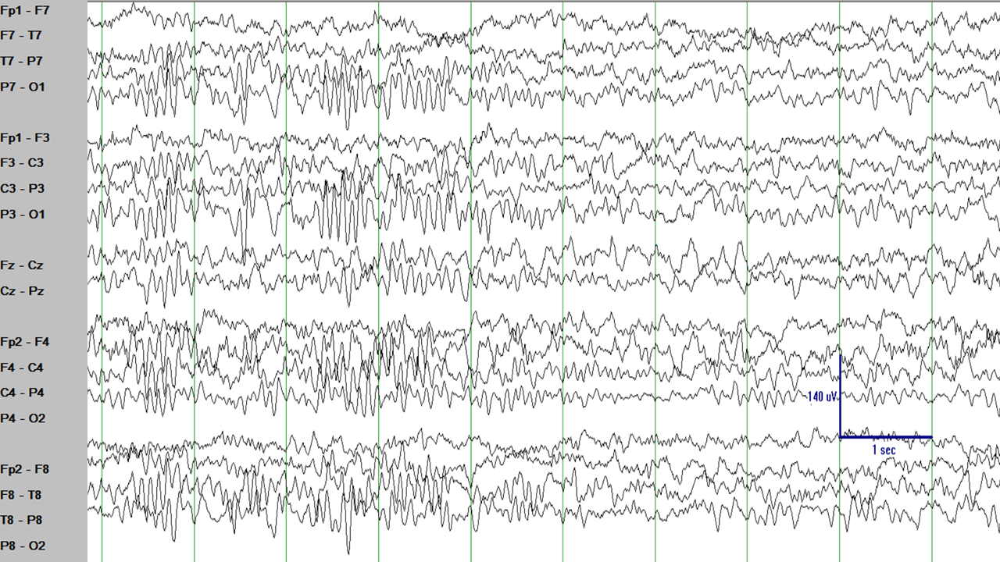
Transición de la vigilia al sueño.
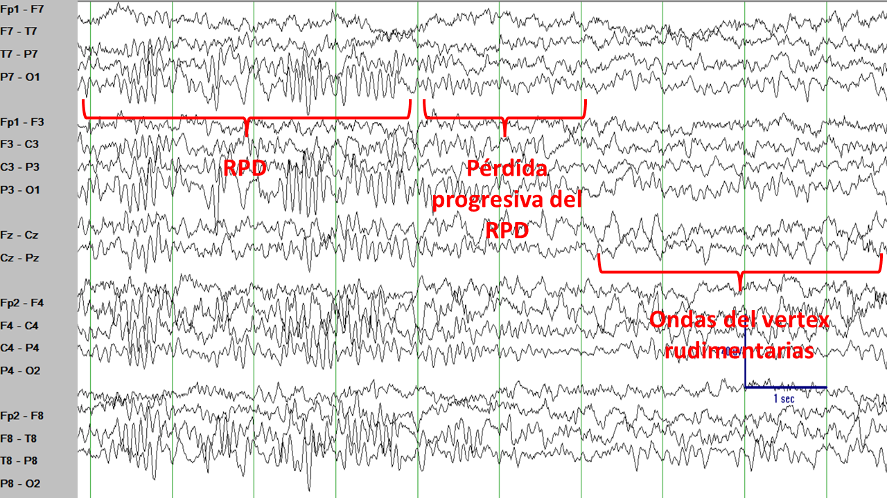
Transición de la vigilia al sueño (mismo segmento del EEG que en la figura de arriba). La parte inicial de este segmento
muestra un ritmo posterior dominante bien formado. Hacia el centro de la imagen el ritmo posterior dominante se hace menos aparente.
Hacia el final de la imagen se ven algunas ondas del vertex rudimentarias.
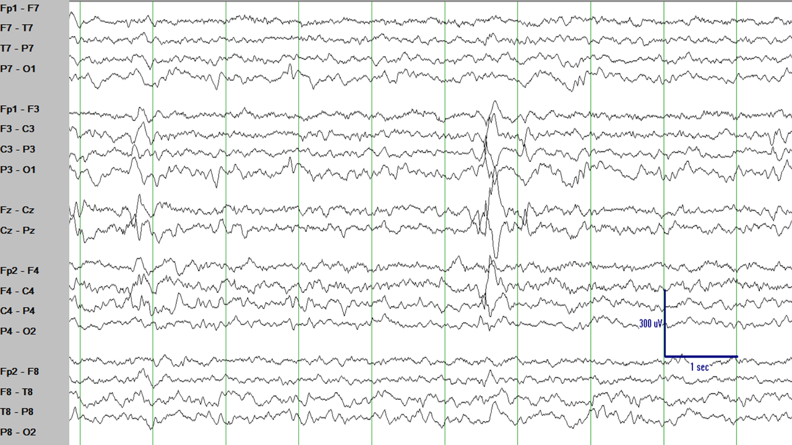
Somnolencia (fase I del sueño). La siguiente página del EEG muestra que el paciente está completemente en fase I del sueño
como muestran las ondas del vertex que son evidentes en la línea media y las regiones parasagitales.
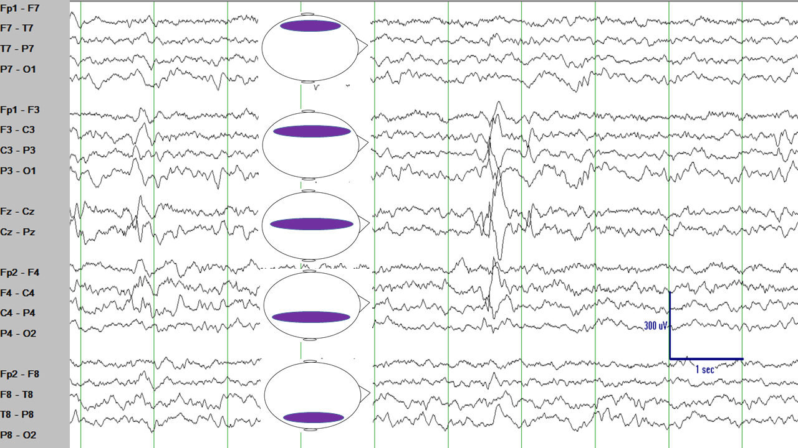
Esta es una buena oportunidad para introducir algo de localización en los canales del EEG.
Los canales en un montaje bipolar anterior-posterior (uno de los montajes más frecuentes en el EEG) van de la parte anterior
a la posterior en 5 grupos: temporal izquierdo, parasagital izquierdo, línea media, parasagital derecho, y temporal derecho.
Cada uno de esos 5 grupos están representados por las áreas violetas en la imagen. Explicaremos los montajes en más detalle
en otra página, pero este es un buen momento para empezar a familiarizarse con qué parte del EEG corresponde a qué parte de
la cabeza.
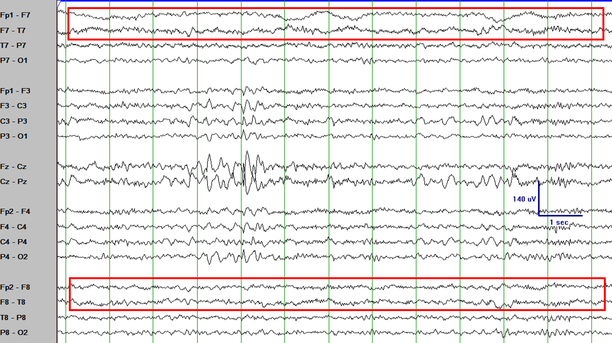
Los movimientos laterales lentos de los ojos (mostrados dentro de los rectángulos rojos) son una de las características
más típicas de la somnolencia. De todas formas, frecuentemente estos movimientos no aparecen. De todas formas las fases del ritmo sueñ0-vigilia
puede identificarse incluso sin todas las características de esa fase.
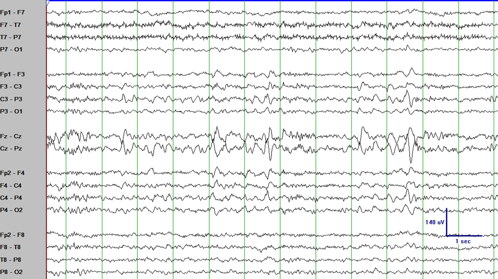
Por ejemplo, este segmento del EEG ocurre durante la somnolencia (fase I del sueño), ¿ves las ondas del vertex?, pero no hay movimientos lentos laterales de los ojos.
SUEÑO MÁS PROFUNDO
Si el paciente permanece dormido, hay una transición progresiva a fases más profundas del sueño: fases II y III del sueño.
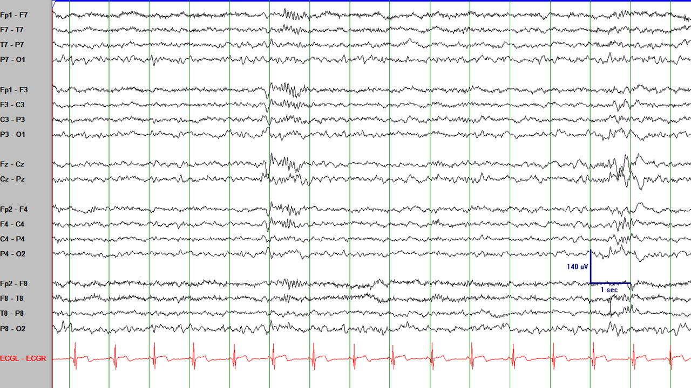
Fase II del sueño. El segmento del EEG de arriba muestra las características más típicas de la fase II del sueño: los husos del sueño.
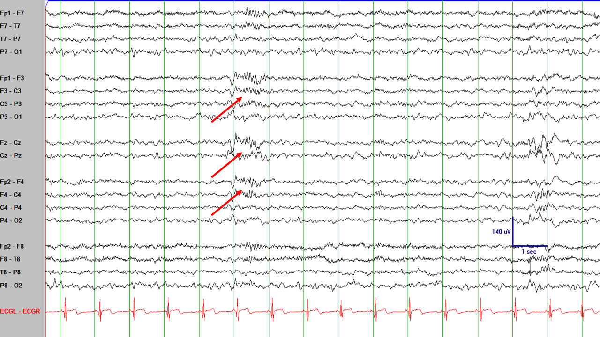
Husos del sueño. Los husos del sueño se caracterizan por su morfología (fusiforme), su frecuencia (aproximadamente 14 Hz), y su localización
(regiones centrales).
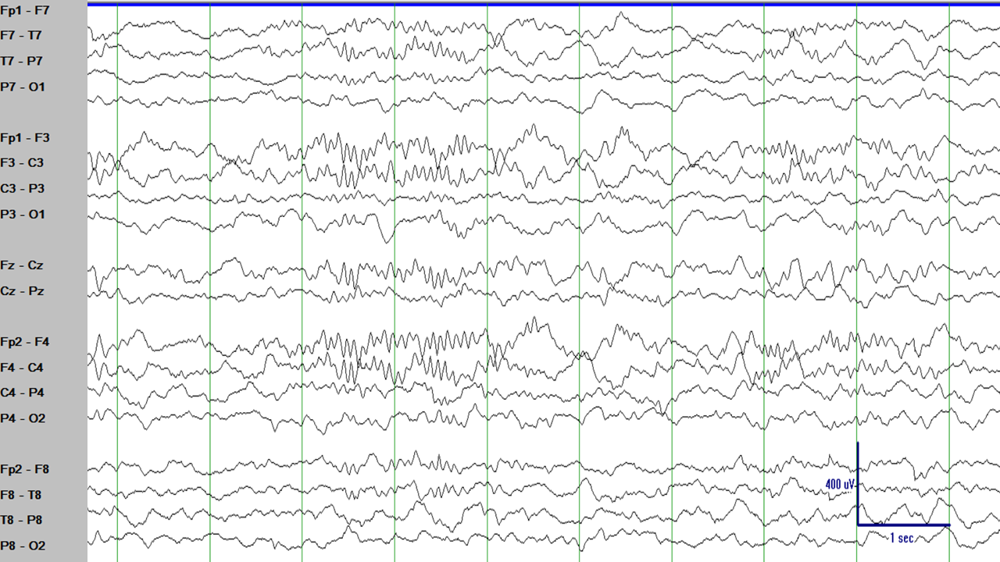
Husos del sueño. Los husos del sueño pueden tener una apariencia distinta en distintos pacientes,
pero generalmente son simétricos, localizados en las regiones centrales, y de aproximadamente 14 Hz de frecuencia.
Cuando el paciente entra en fases más profundas del sueño, las ondas del vertex desaparecen progresivamente, los husos del sueño se hacen menos prominentes, y
el EEG se ralentiza y aumenta en amplitud. La fase III del sueño se caracteriza por ondas lentas de alta amplitud
que ocupan al menos el 20% del trazado EEG.
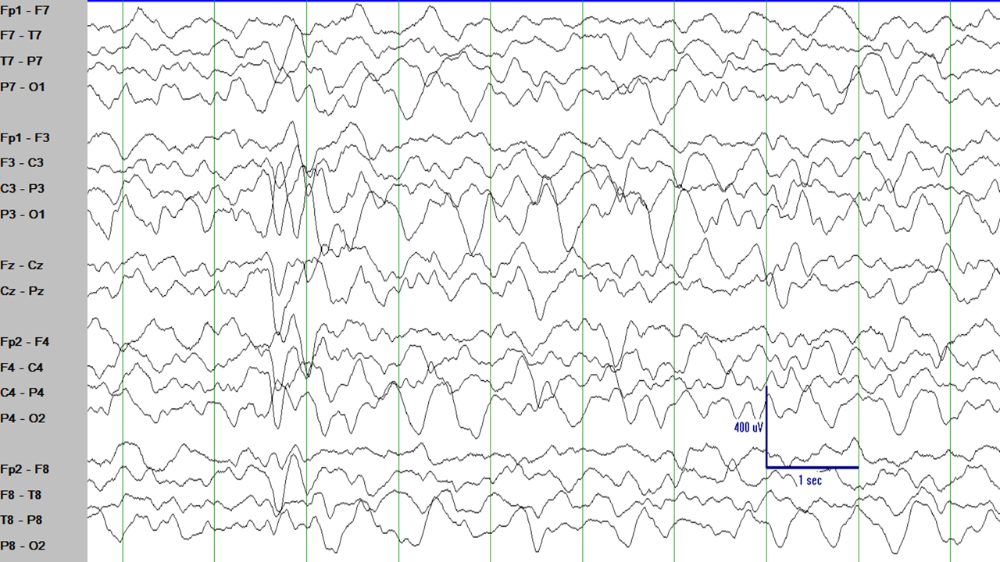
Fase III del sueño. La frecuencia predominante en la fase III del sueño es delta (3 Hz o menos) y la
amplitud de las ondas es bastante alta (mira la escala de voltaje a 400 uV y compara la amplitud de esta porción del EEG con
el EEG de fases previas del sueño).
TRANSICIONES
Es muy frecuente (y normal) tener breves despertares durante el sueño.
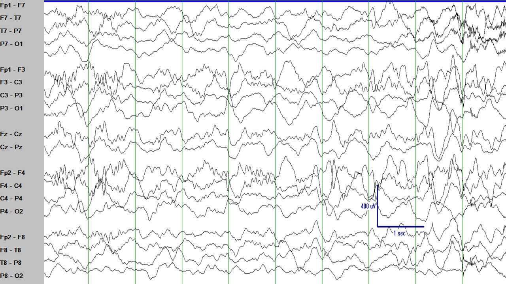
En la parte inicial de este trazado EEG hay husos del sueño y hacia el final
hay ondas hipersincronizadas de alta amplitud, y se empieza a ver algo de artefacto muscular.
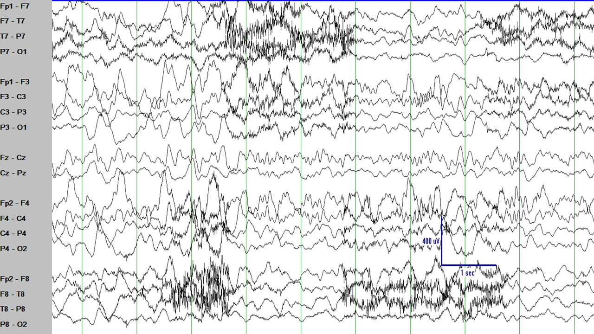
La siguiente página en el EEG muestra hipersincronía mejor formada y
más artefacto muscular.
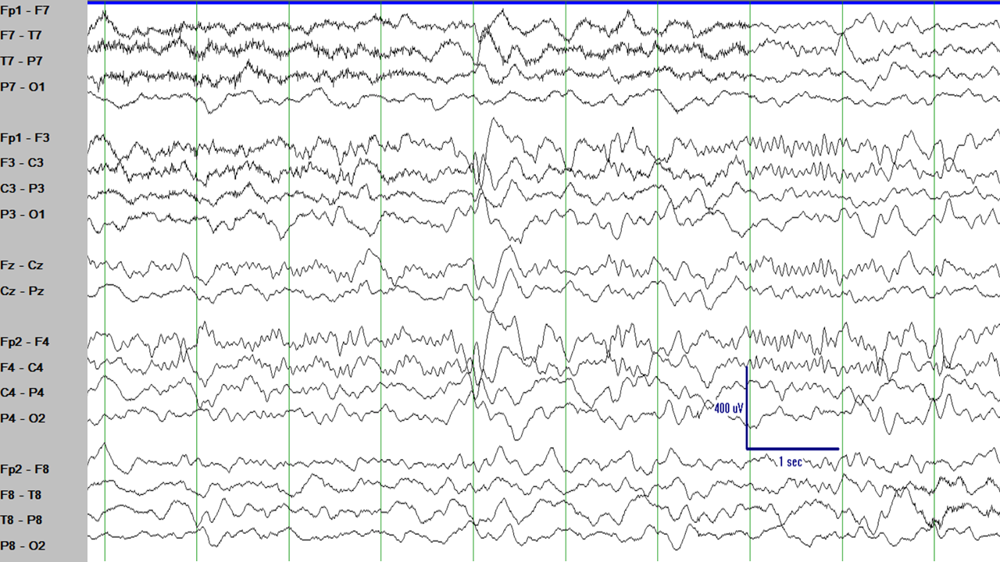
La siguiente página del EEG muestra ondas del vertex y husos del sueño hacia
el final de la página.
Las transiciones entre la vigilia y el sueño (y viceversa) pueden aparecer inusuales y con ondas
hipersincronizadas de alto voltaje. Incluso si aparecen inusuales, son completamente normales durante las transiciones.
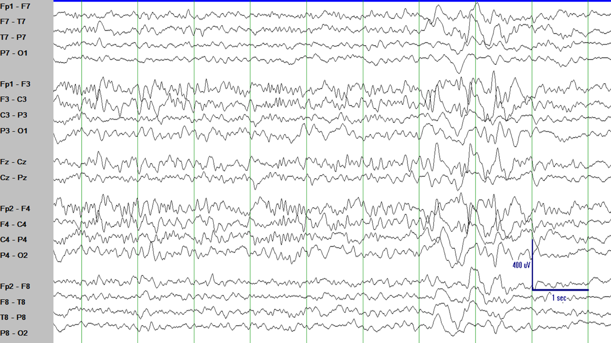
Hipersincronía hacia el final de este trazado EEG.
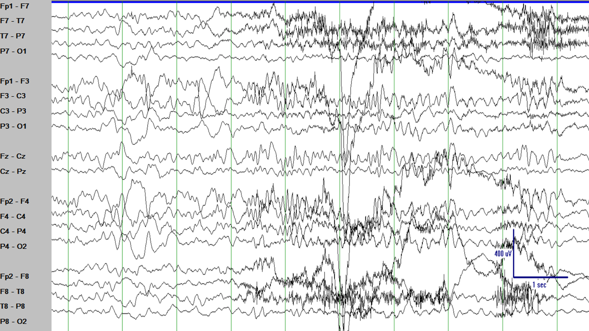
La hipersincronía continúa en la siguiente página del EEG y se sigue de artefacto muscular y
artifacto de movimiento.
Revisemos una transición (completamente normal) de la vigilia al sueño en un niño pequeño, en este caso, un niño de 5 años.
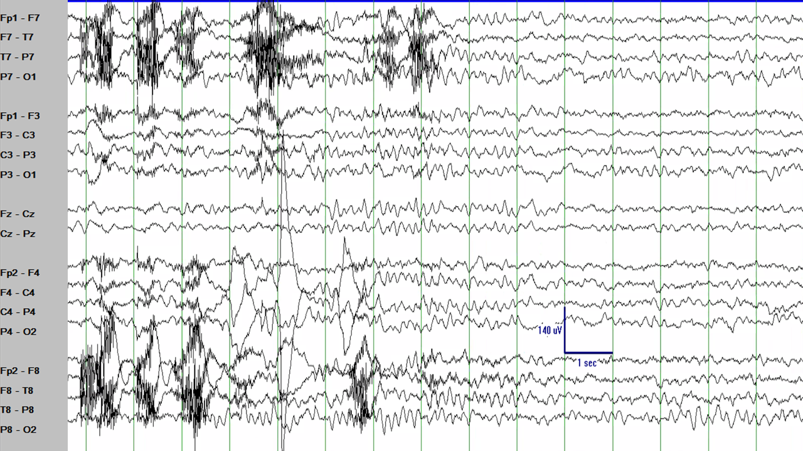
La primera parte de este segmento del EEG muestra artefacto muscular particularmente prominente en las regiones temporales y un ritmo posterior dominante bien formado de 6 Hz, hallazgos normales en un niño de 5 años durante la vigilia. En la última parte de este segmento del EEG, el ritmo posterior dominante se va desvaneciendo.
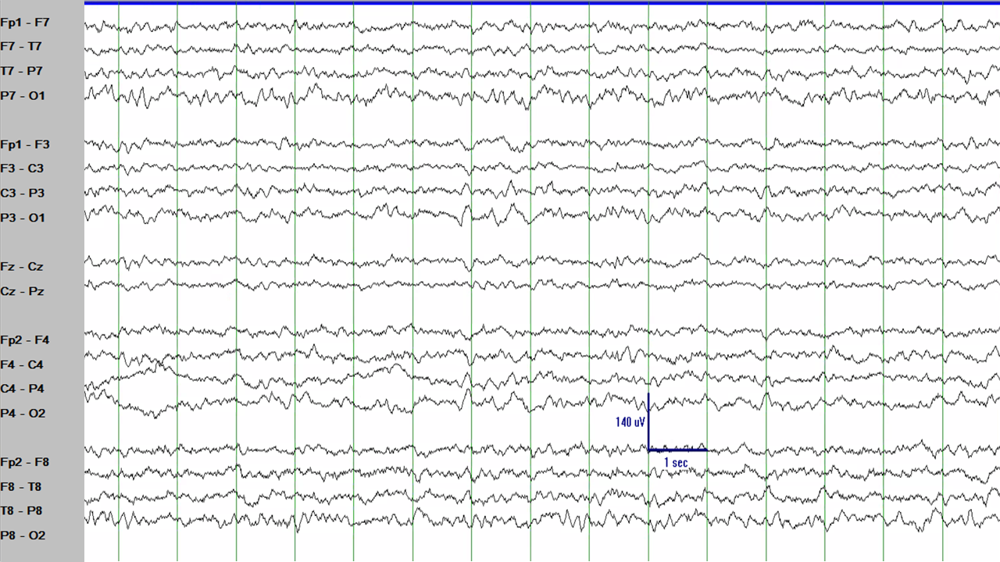
La siguiente página muestra ausencia de artefacto muscular y desaparición progresiva del ritmo posterior dominante.
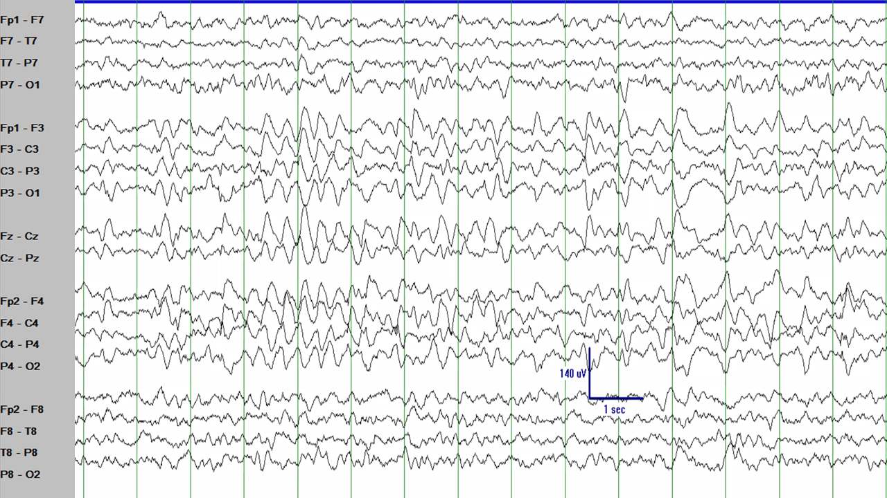
La siguiente página muestra ondas centrales y biparasagitales repetitivas. Son ondas del vertex, pero en este caso aparecen en un patrón repetitivo denominado ondas del vertex en cascada. El paciente está en fase I del sueño.
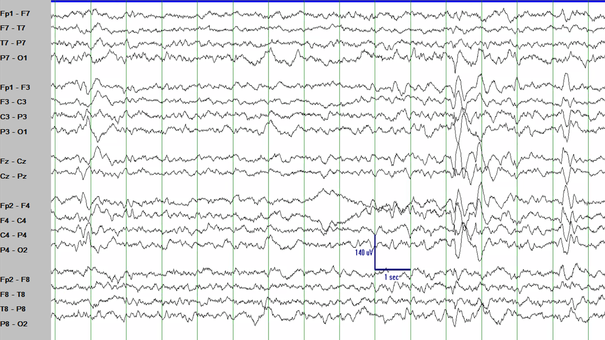
La siguiente página muestra un segmento más típico de la fase I del sueño con ondas del vertex ocasionales que aparecen individualmente.
RESUMEN
En este momento, ya eres capaz de reconocer las características principales del EEG y sus fases.
Ya estás preparado para avanzar un paso más. Las cosas se pondrán mucho más interesantes pronto.